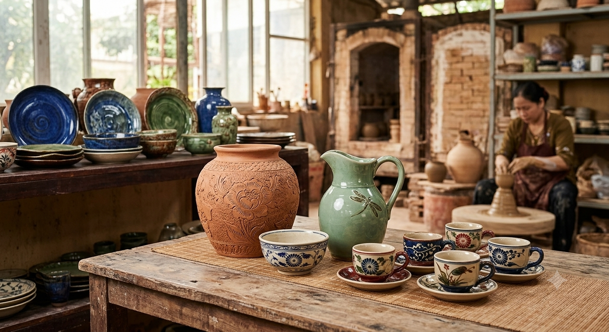

Câu chuyện thương hiệu
TNNT Ceramics là cửa hàng gốm sứ tại Quận 5, Thành phố Hồ Chí Minh. Chúng tôi bắt đầu từ một niềm yêu thích đơn giản: gốm Việt có đường nét, màu men và hơi ấm rất riêng, và xứng đáng có mặt trong đời sống mỗi ngày.
Từ bộ ấm chén thưởng trà, bát đĩa cho bữa cơm gia đình, lọ hoa và lộc bình trang trí, đến đồ thờ và tượng gốm, mỗi sản phẩm đều được chọn lọc từ các thương hiệu gốm như Bát Tràng, Gốm Thành Thuỷ, Gốm Trường An và Hương Vân Cát.
Chúng tôi mong bạn tìm thấy ở đây không chỉ một món đồ đẹp, mà còn là sự an tâm nhờ mô tả rõ ràng, giá minh bạch và lời hướng dẫn chăm sóc để gốm đi cùng bạn lâu dài.

Giá trị chúng tôi theo đuổi
Chọn lọc kỹ lưỡng
Mỗi mẫu đều được xem xét về dáng, men và độ hoàn thiện trước khi lên kệ.
Thông tin minh bạch
Thương hiệu, giá và mô tả sản phẩm được ghi rõ để bạn dễ so sánh và lựa chọn.
Đồng hành lâu dài
Chúng tôi chia sẻ cách dùng và chăm sóc gốm tại mục Chăm sóc gốm.
Ghé thăm cửa hàng
273 An Dương Vương, Phường Chợ Quán (Quận 5), Thành phố Hồ Chí Minh
Điện thoại: 0863962925 | Email: tnntceramics@gmail.com
Đại diện: Trần Nguyễn Hoàng Nam - Giám đốc